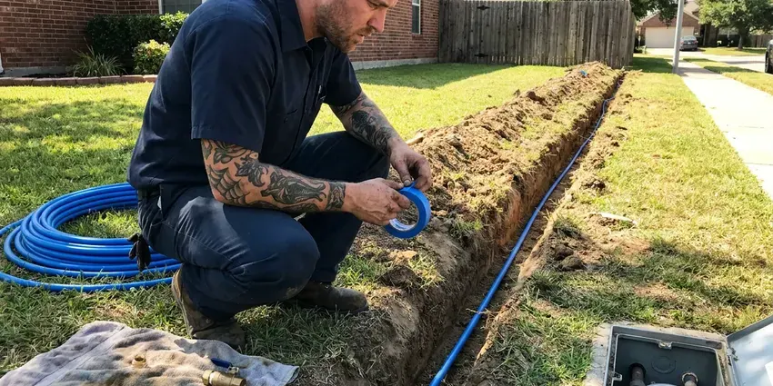

Sewer Replacement in Portsmouth, VA
Sewage smell in the yard or a soggy spot over the line? Those point to a broken lateral. We replace them in Portsmouth, VA.
- Trenchless Pipe Bursting
- Virginia Licensed Plumbers
- Nearby Crews
- Prompt Scheduling
A Sewer Line That Just Works in Portsmouth, VA.
Let us know where the backup shows up first.
Local Sewer Line Replacement in Portsmouth, VA
FBN Plumbing asks where the backup shows up first. A floor drain in the basement tells us something different than a tub upstairs. From there we check the cleanout, run a camera to the main, and measure the depth and length of the line so the quote matches the actual job. No surprise extras.
Our expertise includes:
- Swapping clay and cast iron for PVC
- Camera inspection with sonde locating
- Under-slab sewer repairs

Additional Plumbing Replacement Services in Portsmouth, VA
When repairs are no longer enough, our replacement services in Portsmouth, VA deliver modern, efficient equipment installed right.




Water Line Replacement near Portsmouth

Customers
Why Choose FBN Plumbing for Sewer Replacement in Portsmouth, VA?
Repair or replace is a real question. A single cracked section can be fixed with a spot repair. When the camera shows breaks every few feet, roots at most joints, or a belly holding water, replacing the run costs less than the next three service calls. We tell you which it is.
- Licensed Plumbers, Our crews are fully licensed and carry insurance for sewer work.
- Code Compliant, Slope, cleanouts and connections to the main meet current code.
- Known Ground, We know how local soils behave in an open trench and where old laterals usually sit.
Citywide Coverage
We replace sewer lines in every part of Portsmouth, from older neighborhoods still on clay pipe to newer subdivisions where a builder skimped on bedding. The method changes with the lot. Camera work is usually this week.
Experienced Team
You meet the plumber who will do the work at the estimate. FBN Plumbing plumbers are licensed and know sewer slope, cleanout and connection rules without checking a book, so questions get answered on the spot. That saves time.
Safety-First Approach
Sewage is a health hazard, so we treat it like one. Our plumbers glove up and wear eye protection. Any spill in the yard gets cleaned up, limed and covered with fresh soil, and inside spills get disinfected before we leave. Boots stay out of the house.
Trusted Certified Portsmouth Plumbing Services Professionals
At FBN Plumbing, we take pride in licensed, certified plumbing services throughout Portsmouth, VA. Credentials matter in this trade. Every repair, install and maintenance visit follows strict safety and quality rules, and the plumbers doing the work carry recognized industry credentials.
Call Us Now PHCC Plumbing Contractor Recognition
PHCC Plumbing Contractor Recognition Better Business Bureau (BBB) Accreditation
Better Business Bureau (BBB) Accreditation Angi Certified Pro
Angi Certified Pro ISO 9001 Quality Management Certification
ISO 9001 Quality Management CertificationSewer Line Replacement Methods in Portsmouth, VA
Trenchless Sewer Replacement Options in Portsmouth, VA
Bursting and pulling replace the pipe. CIPP lining coats the inside of the existing pipe instead. We use bursting when the old line is broken or undersized, since it puts a new pipe in place instead of reinforcing the old, and lining when the pipe is still round and mostly intact. Each has its place.

Sewer Line Repair vs. Full Replacement in Portsmouth
We look at the whole line before recommending either. A single bad joint can usually be dug and fixed. Breaks every few feet, roots at every joint, or a belly that holds water for twenty feet mean the rest of the pipe is close behind, and in that case a full replacement saves you from paying to dig the same yard twice.
Addressing Tree Root Intrusions in Portsmouth, VA
Roots find sewer lines by following moisture. They need only a tiny gap. Once inside, they grow into a mat that catches paper and grease, and a root cutter clears them for a season at most, because the opening is still there. New PVC with glued joints gives them no way in.
Commercial Sewer Line Replacement in Portsmouth
Commercial laterals are often 6-inch pipe and carry grease or heavier flows. There is often a grease trap or interceptor to work around. We schedule the work around your hours, set up temporary bypass pumping when the building needs to stay open, and work with the utility on the main connection. Weekend starts are common.
Advanced Diagnostics for Sewer Issues in Portsmouth, VA
Diagnosis comes before price. The camera shows what is wrong, the locator shows where. We sometimes add a hydro-jet cleaning first, because a line full of grease can hide a crack, and a clean pipe gives a much more honest picture of its condition. Guesswork costs money.
Traditional Sewer Line Replacement in Portsmouth
Digging is still the right method for a lot of lines. If the old pipe has caved in, trenchless has nothing to follow. Sharp bends, a belly that needs regrading, or a route that should change all point toward an open trench, and we leave the yard as close to how we found it as dirt allows. Grass grows back.
Foundation Protection during Sewer Replacement in Portsmouth, VA
Basements are common in northern and western parts of Virginia, while crawlspaces and slabs are more typical in the east and south. A sewer leaking under or beside the house keeps the soil wet in one spot, and that uneven moisture can push or settle part of a slab. When we replace a line near the foundation we dig carefully, avoid undermining footings, and tamp each layer of fill. Slow work near the house.

Clay and Orangeburg Pipe Replacement in Portsmouth, VA
Clay pipe came in short sections with a joint every two or three feet. That is a lot of joints for roots to find. Orangeburg is worse, since the tar-paper wall softens and deforms under the weight of the soil, and both are good candidates for bursting because they break apart easily. Fast pulls.
Sewer Line Replacement Near Portsmouth, VA
Our crews work on sewer lines across Portsmouth every week. Neighbors usually have the same pipe material, since streets were built together. If the house next door had clay pipe full of roots, yours probably does too, which gives us a good guess before we scope. Patterns help.
A local crew can come back for the inspection. That matters with sewer work. The trench usually has to stay open until the inspector signs off, so we plan our schedule in Portsmouth around the inspection window and keep the hole covered, fenced and marked overnight until it passes.
FBN Plumbing at a Glance
- Licensed and insured plumbers serving Portsmouth, VA
- 24/7 emergency service with same-day scheduling
- Clear written estimates, no hidden fees
- 4.9-star rated by 798+ Virginia customers
Portsmouth Map
Portsmouth Information
- Population
- 96,793
- Area codes
- 804/540/434
- Service area
- Portsmouth and communities within 40 miles
- Nearby
- Norfolk, Chesapeake, Hampton, Newport News
Old cast iron, clay and Orangeburg pipe, plus roots and settling soil, are why plenty of sewer laterals in Portsmouth, VA need replacing.
Talk to a Plumber
Reach out to FBN Plumbing for honest, reliable plumbing from people who know the trade in Portsmouth, VA.
Our Specialized Plumbing Services in Portsmouth, VA
At FBN Plumbing, you get every kind of plumbing service from one company across Portsmouth, VA. From leak detection to full system installs, our team works fast and charges fair prices on homes and commercial properties alike. Here are the core services we offer:


How Sewer Replacement Works in Portsmouth, VA
Three things decide the method: distance, depth and obstacles.
Call Us
Call (434) 230-6997 and describe the backups. We book a camera inspection.
Scope and Plan
We camera the line and mark the breaks. Then we choose the method.
Replace and Test
We install the new line, flow test it and restore the yard. A final camera pass confirms it.
Frequently Asked Questions About Sewer Replacement in Portsmouth
Typical residential jobs run from about $4,000 to $25,000 or more, based on how long and deep the line is and how we replace it. Trenchless can cost more per foot but saves the cost of new concrete or landscaping. Under-slab work costs most. The camera tells us which.
A written labor warranty from us. Pipe makers cover the material.
Yes, in most cities. We handle the permit.
Snaking clears a blockage. The cable cannot repair what caused the clog. If the backup returns every few months, the line usually has a root entry, a belly that collects solids, or a broken section that catches paper, and the camera will show which one it is. That decides repair or replacement.
PVC for trenches and HDPE for pipe bursting. Both are rated for burial.
Technically, maybe. It needs a permit, locates and correct slope.
We put a labor warranty in writing on every replacement. PVC and HDPE makers carry their own warranties. If one of our joints or connections ever fails, that repair is on us, and the terms are on your estimate before you sign. Ask for the length.
Labor is warrantied in writing. You see the warranty before signing. Materials such as the PVC pipe, fittings and couplings carry their own manufacturer coverage, and we take care of any registration. Both apply.
What Our Customers Say About Our Plumbing Experts
Kevin O.
Before buying our house I paid for a sewer camera inspection. FBN Plumbing found a belly in the line that held standing water about forty feet from the cleanout. We used the video to get the sellers to fix it before closing.
Sewer Camera Inspection · Hampton, VA
Patricia H.
We had a slab leak that two other companies could not find. FBN Plumbing located it in under an hour with a listening device. They rerouted the line through the attic instead of breaking up the floor, so we kept our kitchen tile.
Slab Leak Repair · Newport News, VAPaul B.
Our pit pump ran nonstop even in dry weather. The plumber found the check valve was stuck open, so the same water kept cycling back into the pit. New valve, new float switch, done in an hour. It runs quiet now.
Sump Pump · Virginia Beach, VABrian W.
I smelled gas behind the dryer and called right away. The plumber found a corroded flex connector, replaced it, and pressure tested the whole line before turning the gas back on. He let me watch the gauge hold steady for fifteen minutes.
Gas Line Repair · Virginia Beach, VA
Monica A.
Our water bill nearly doubled in one month with no change in how we used water. The tech checked the meter, heard the leak under the hallway with his equipment, and opened a hole about a foot square. Fixed the same day.
Slab Leak Repair · Hampton, VARobert G.
The camera showed a full break in our clay sewer line near the street. FBN Plumbing replaced it with a trenchless pipe burst, so the only digging was two small pits in the yard. They let us watch the footage before and after.
Sewer Line Replacement · Portsmouth, VA